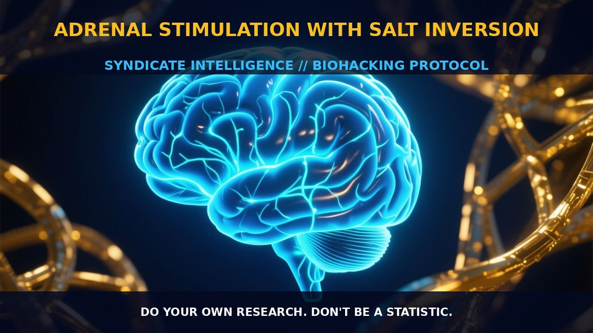

Optimizing Morning Cortisol with Adrenal Stimulation and Salt

1. The Mechanism
Adrenal stimulation with salt inversion is a technique aimed at optimizing morning cortisol production and reducing stress. The primary mechanics of this practice involve the intake of a small amount of salt mixed with water to stimulate the adrenal glands, coupled with an inversion pose to enhance blood flow to the head. The salt acts as an osmotic agent, drawing water into the bloodstream and triggering the release of cortisol from the adrenal glands.
This process is crucial for waking up the body from its overnight fasted state and preparing it for the day ahead. The inversion pose, where the legs are lifted upwards, helps to increase blood flow to the head, further supporting adrenal gland function and promoting a more alert state upon waking.
The adrenal glands, located atop the kidneys, are responsible for producing several vital hormones, including cortisol. Cortisol plays a key role in metabolism, immune function, and stress response. By stimulating the adrenals with salt and inversion, the body can better manage its physiological needs and prepare for the day’s activities. The salt intake, particularly when combined with water, helps to rehydrate the body and provides the necessary electrolyte balance for optimal adrenal function.
The combination of hydration and electrolyte balance creates an osmotic pressure that signals the body to produce more cortisol, thereby jumpstarting the adrenal glands.
2. Biological Leverage
The biological leverage of this practice lies in its ability to enhance the body’s natural cortisol production, which is essential for waking up and managing stress. When you ingest a moderate amount of salt mixed with water shortly after waking, the osmotic pressure in the bloodstream increases, signaling the hypothalamus to trigger the pituitary gland to release adrenocorticotropic hormone (ACTH).
ACTH then stimulates the adrenal glands to release cortisol. This process helps to regulate blood pressure, maintain fluid balance, and support immune function. Moreover, the inversion pose enhances blood flow to the head and neck, which can improve circulation and reduce tension in the body. This increased blood flow to the brain can enhance cognitive function and alertness, making it easier to transition from a resting state to a more active state.
The combination of increased blood flow and cortisol production helps to reduce the stress response, making it easier to face the day’s challenges with a clearer and more focused mind. The practice also supports the digestive system by increasing urination, which helps to remove waste products that have accumulated overnight. This diuretic effect is particularly beneficial for rehydrating the body and flushing out toxins, contributing to overall well-being.
The stimulation of the adrenal glands through the salt intake can help to balance the autonomic nervous system, reducing the stress response and promoting a state of calm and alertness. This is particularly important for individuals who need to manage high levels of stress and maintain optimal cognitive performance throughout the day.
3. Tactical Implementation
To implement this practice effectively, start by ingesting 400 ml of water mixed with half a teaspoon of salt within 30 minutes of waking up. This amount of salt provides the necessary electrolyte balance to stimulate the adrenal glands and rehydrate the body. It is important to use high-quality salt, such as mineral salt, which is rich in potassium and magnesium. This can help to lower blood pressure without significantly increasing salt consumption.
After ingesting the salt and water, perform the inversion pose by lying down on your back with your legs lifted up to the wall for about 8 minutes. This pose enhances blood flow to the head and neck, promoting better circulation and reducing tension in the body. The combination of the salt intake and inversion pose can help to jumpstart your adrenal glands, reducing the stress response and improving cognitive function.
To further enhance the effects, consider incorporating other morning routines such as yoga, jogging, or stretching, which can help to release tension and improve circulation. A warm shower or bath followed by a cold shower can also promote blood circulation and improve skin health. Additionally, using a wake-up light that imitates a natural sunrise can help to emulate a natural environment and reduce the stress response caused by a regular alarm clock.
It is important to maintain consistency in this practice to see the benefits over time. However, individual responses may vary, and it may be necessary to adjust the salt dosage based on personal tolerance and physiological needs. For example, some individuals may require more salt to fully stimulate their adrenal glands, while others may need less to avoid overstimulation. Experiment with different doses to find the optimal amount for your body.
Prostar Life Hack
Start your day with a small dose of salt water (400 ml of water with half a teaspoon of high-quality salt) and an inversion pose (8 minutes). This combination enhances blood flow to the head and neck, boosting adrenal gland function and reducing stress, leading to improved cognitive performance and alertness.
[ AUTHOR: LEAD TECHNICAL RESEARCHER ]